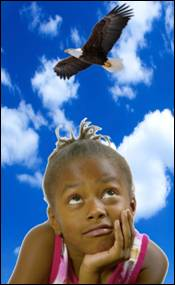

Creating a Montage Using GIMP

GIMP is an excellent tool to use when you want to combine several images into a single graphic.In this tutorial you will learn some of the techniques that will allow you to combine and resize images, creating a whole new graphic.
Here is what your finished image will look like after combining photos of the sky, the eagle, and the girl.